Meetup Lyon #1
ElasticSearch & Resiliency
Who are we?
Resiliency...
Ability to withstand or recover quickly from difficult conditions.
... and ElasticSearch
Until recently, not so documented...
... and ElasticSearch
Until recently, not so documented...
Talk's main goal(s)
- * Explain how ES behaves in some harsh conditions
- * Demo some use cases
Back to basics: Shard your data
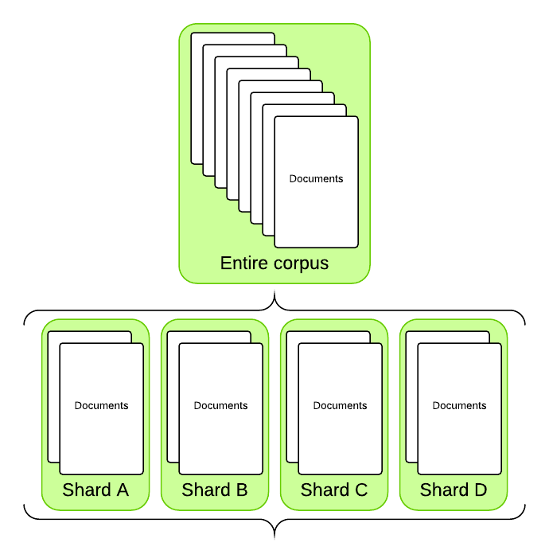1 ElasticSearch Index <=> N shards
Back to basics:
Distribute the shards
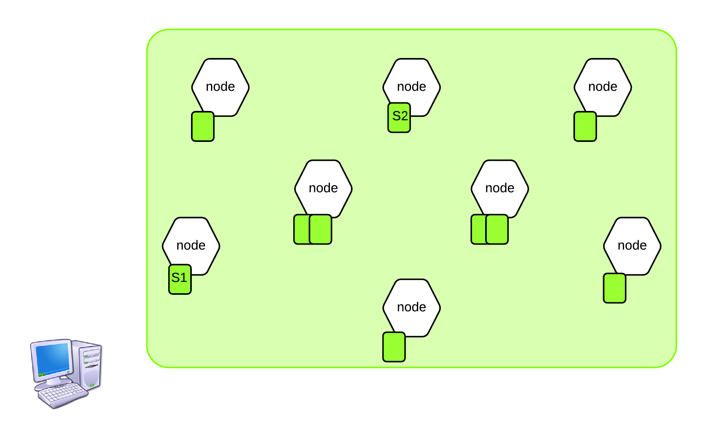
Back to basics:
Routing
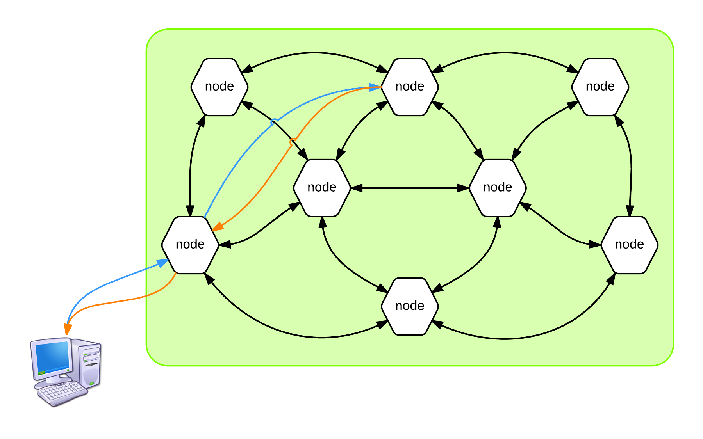
Setup for the demo
Tooling for our demos
five nodes cluster (ElasticSearch version : 1.4.0)
JMeter (slightly) randomized test plan
simple node cluster for monitoring

Use case #1: Machine crashes
IRL: Server un-plugged, hard-disk drive failure, etc.
Simulation: Stopping a node
What should we expect?
Nada!
How's that?
Replication provides failover
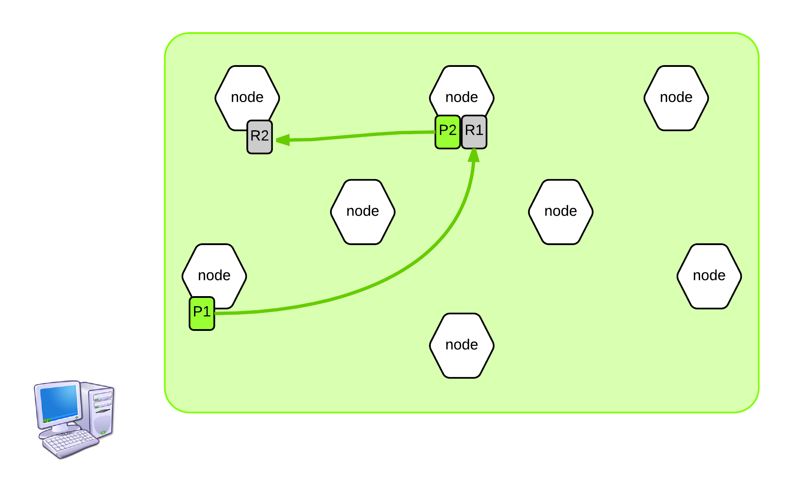Two types of shards:
- Primary shards
- Replica shards
How-to
Cluster status
- Green - all shards are allocated
- Yellow - the primary shard is allocated but replicas are not
- Red - the shard is not allocated in the cluster
Use case #2: Multiple Failures
What if both nodes hosting PRIMARY and REPLICAS go down?
> Unless they all go down within a short timeframe, you are fine!
ElasticSeach uses Lucene
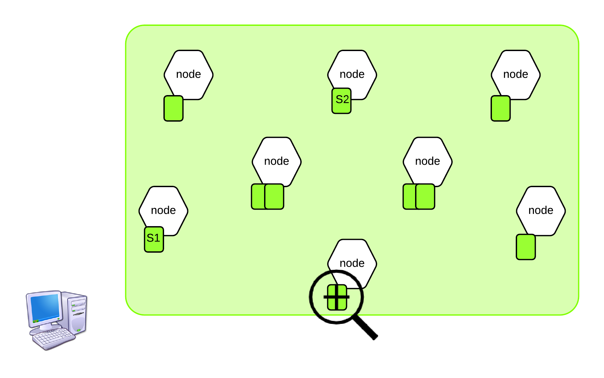
If we zoom in on one node and then on one shard...
Inverted index
| term | matching documents | |
|---|---|---|
| dog | => | doc1, doc45 |
| eat | => | doc1, doc6, doc30 |
| whatever | => | doc5 |
Cheat Sheet
In ElasticSearch
- Index: “logical namespace” pointing to n physical shards
- Shard: 1 lucene index
In Lucene
- Index: “collection of segments” + a commit point
- Segment: Inverted index
Before the commit
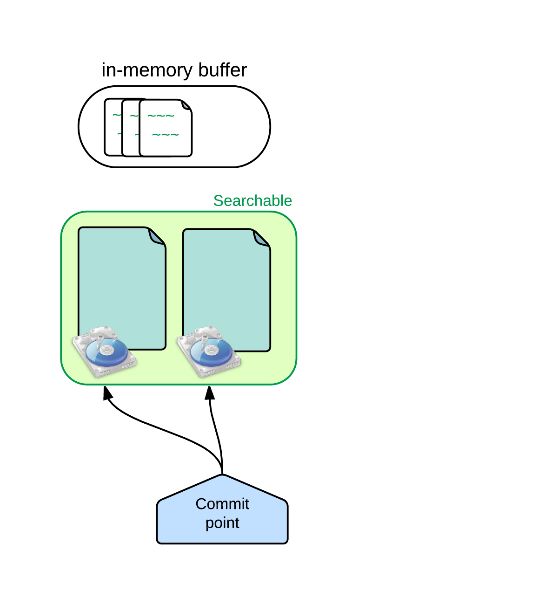
New documents in the in-memory buffer, ready to commit
After the commit
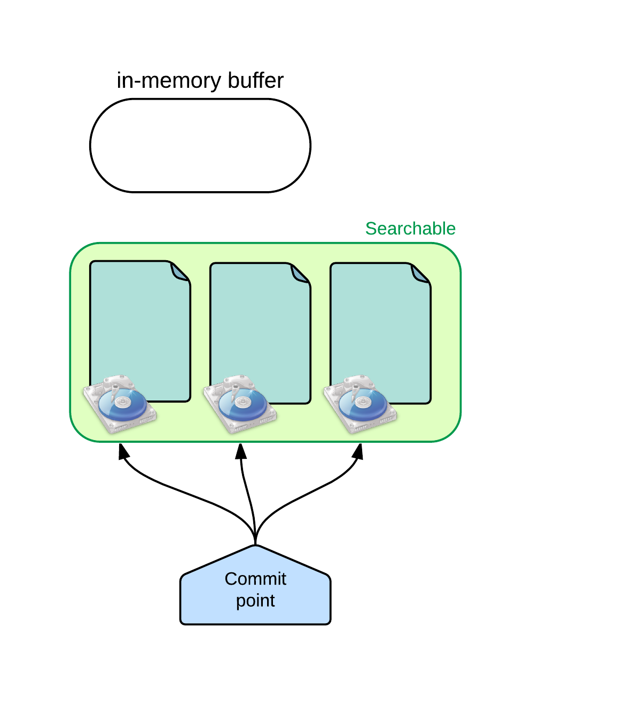
A new segment is added to the commit point and the buffer is cleared
In case of a power failure?
Translog, baby!
Transaction log = WAL
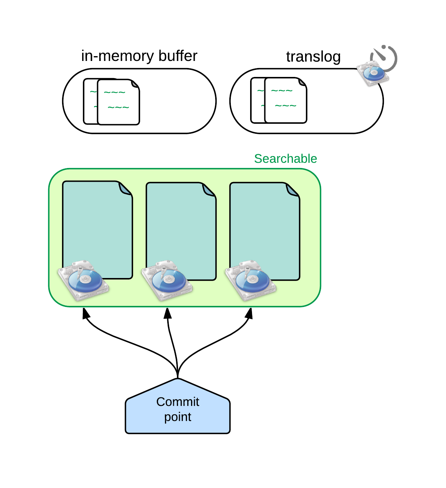
Documents are being written in buffer AND translog
Transaction log = WAL
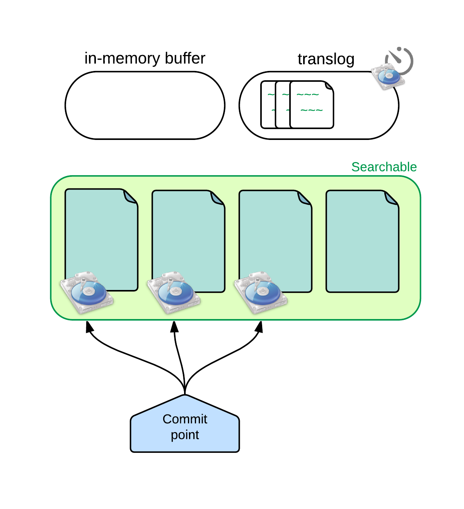
The reader has been refreshed, buffer is cleared but not the translog
Transaction log = WAL
Other documents being ingested
Transaction log = WAL
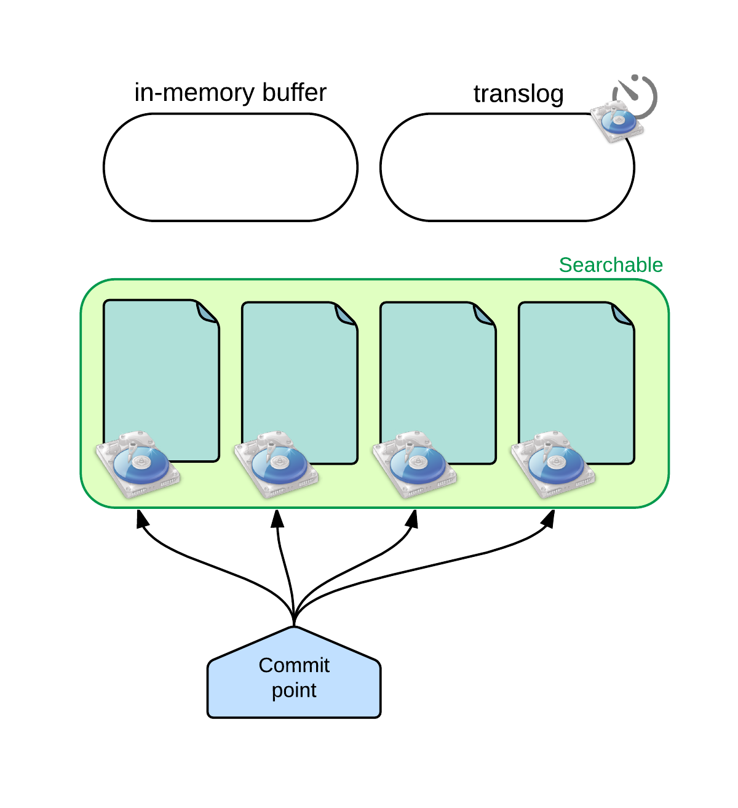
At some point, the translog is fsync'ed = "commit"
Sure you could propose to fsync more frequently… …at the cost of indexing performance! and it is unlikely to provide more reliability at the end of the day
How safe is the translog?
Writes to a file will not survive a reboot/crash
until the file has been fsync'ed to disk
Conjunction of the following mechanisms lowers the odds of a loss:
- Translog is fsync'ed every 5 seconds, by default
- The data is held in the replicas as well!
Summary
- Machine crashes -> Service continuity
- Primary + replica fail -> No data loss
- Network-related failures
- Memory-related failures
- Disk-related failures
Network failures
Zen discovery
- Ping
- Fault detection:
- Master -> other nodes
- Nodes -> master
- Master election
- Cluster state updates
Master's duty
Maintain the global cluster state:
- Reassign shards when nodes come in or out
- Communicate the cluster state changes to other nodes
Use case #3: Master down
- IRL: load is too heavy and the node crashes
- Simulation: Stop the docker container hosting the master node
Dedicated masters
(in critical clusters)
How-to
Check if the master is at risk
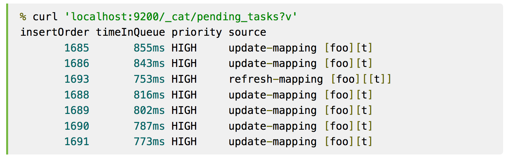
Use case #4: Network partition
There can only be one (master)!
- IRL: Network failure that splits the cluster into multiple sets of nodes
- Simulation: using Blockade to emulate partitions
Again, we expect resiliency
- The client should be able to index documents and search
- The cluster should reform once the network gets back to normal
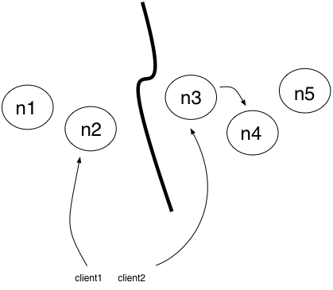
We want to prevent a split brain from emerging
Split brain safeguard
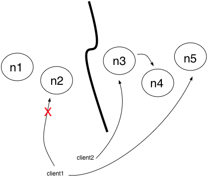minimum_master_nodes = (n / 2) + 1
Use Case #5: Intersection
The brain-melting issue
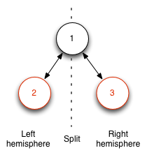
Issue #2488 on Github
Fixed in v1.4.0
Summary
- Machine crashes -> Service continuity
- Primary + replica fail -> No data loss
- Network-related failures -> Service continuity & no data loss
- Memory-related failures
- Disk-related failures
Use Case #6
If a node takes a long time to answer?
> It is considered down.
Garbage collections
(stop-the-world)
ElasticSearch and Memory
Memory hungry software
Result: very large Heap result in long GCs
Reason: caches lots of data
Example: filters
Fielddata
Uninverting the inverted index
Used for :
- Sorting
- Aggregations
- Scripts
- Some relationships
How to lower GC duration?
Limit Heap Size!
Recommendations :
- 50% available RAM
- 32 Gb max (compressed oops)
Use doc_values instead of fielddata
- Built at indexing time rather than search time
- Increase overall index size, but not as limited as heap
- Since 1.4.0 => only 10-20% slower than in-memory fielddata
How to lower GC duration?
Other tips...
Beware of caches sizes!
Don't make it swap!
Tests, tests, tests!
One more thing...
OutOfMemoryException = node killer
ElasticSearch lets you avoid it: Circuit-breakers
- v1.0 : fielddata circuit-breaker
- v1.4: request and parent (global) circuit-breakers
Use case #7: data corruption
Hardware failure, JVM bug, travelling over the wire...
If not detected, could be replicated everywhere
Demo time
Let's try with a corrupted snapshot...
Error! (and red status)
How does it work?
Since Lucene v4.8...
How does it work?
Lucene 4.8 <=> ElasticSearch 1.2.0
1.3.X : snapshot/restore and recovery
1.4.0 : translog!
Use case #8: No space left
That's really not good for the node
How to prevent a "no space left"?
Disk-based shard allocation
Feature added in v0.90.4
Enabled by default since v1.3.0
Disk-based shard allocation
Cluster-aware of disk usage
There are 2 tiers:
- First tier (>85%) : stop shard allocation to node
- Second tier (>90%) : relocate existing shards
Final advice regarding "No space left"
Monitor your disk usage!
Conclusion
Since mid-2014 :
- Major improvements regarding resiliency ( > 1.4 )
- Go visit the Resiliency status page!
From :
To :
Questions / Answers
Use cases summary
- Node crash
- Translog
- Master election
- Split-brain
- Intersect partition
- Limit memory usage
- Circuit breaker
- Data corruption
- No space left on disk